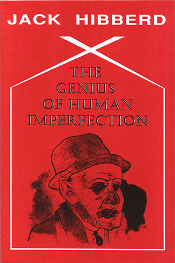

|
The Genius of Human Imperfection : Jack Hibberd |
||||
 |

...verve and abundance in vocabulary and verse form as
well
as imagination....
...Hibberd triumphs in comedy and satire... ....poetry that stands its ground with a single voice... Book Description Jack Hibberd has produced a distinctly original and enjoyable collection of poems, superbly crafted and marked by the author’s wit and linguistic flair - his poetic is to do with rhythm, shap-edged language, proverbial utterance, oracle. His humour is wry and sensual, a form of the intellect in its wooing shape. The raunchy side of this collection gets broader as it progresses, especially in ‘Camperdown Dichotomies’, a scabrous sequence which imagines from moral Melbourne a Sydney bequeathed by Cavafy. I recommend all into whose hands these poems pass to read The Genius of Human Imperfection with care. As Peter Porter writes: ‘A distinctly original and enjoyable collection of poems - his poetic is to do with rhythm, sharpedged language, proverbial utterance, oracle. His humour is wry and sensual... the raunchy side of this collection gets broader as it progresses.’ These poems give pleasure, and there can never be too much skill at large in the world.... Peter Porter Hibberd’s language is a source of delight... resembling nobody else and, possibly, nothing else.... Chris Wallace-Crabbe ISBN 1876044268 82 pgs |
||||
Book Sample
Reviews
Poetry - The Genius of Human Imperfection Bev Braune Cordite, No. 6-7, 2000 In the sense that one of
the aims of
poetry is to stimulate our curiosity about the world behind and before
us, understanding something of the background of ideas as a theme to a
collection is often very useful if it unifies readers to the
poet’s voice.
In this respect, Jack Hibberd signals in The Genius of Human Imperfection that nineteenth-century French poet Charles Baudelaire and early twentieth-century Austrian composer Arnold Schoenberg are significant to his collection. In some instances the controlled style and strange mixture of violence, eroticism and the voyeuristic seem burdensome - la Baudelaire’s Les Fleurs du mal (The Flowers of Evil, 1857) perhaps. While his subjects often seem either as monuments or as part-documentaries on political disasters, most of the poems here are fairly well crafted. But the territory in which Hibberd seems most comfortable is that of apparent harmony set against contradictions and the disharmony of experience set against expectation. His focus on the movement of rhyme may perhaps be a conscious effort to emulate Schoenberg’s serial repetition of tones as a means to achieve this counterpoint. You wake in the middle of the
night
and walk into the garden and there is a full moon, wafer, medallion, gong. Though men explore its surface, probe for minerals, estimate radiation, it is we, the unsleeping, here, who know what it is worth. It is where all the dead go, and live. It is their essence, not so much the milk of human kindness more cold concentrated laughter. ‘Presage’ In the cases of Hibberd
and Rose [Peter Rose, Donatello
in Wangaratta] the
extent of our understanding of their collections seems filled
out
first by a knowledge of and sympathy with the artistic considerations
that form the background to the works. Our satisfaction, however,
appears to rely on how each poet keeps us intrigued by the art of their
‘sugary alliance[s]’.
The Genius of Human Imperfection Martin R. Johnson Sidewalk, No. 2, 1999 As an opener to his
book, Jack
Hibberd’s gone for a line from that odd comic genius, Samuel
Beckett. ‘Death has not been given a fair crack of the
whip.’ Already a smile, like an appreciative nod, or a As an
opener to his book, Jack Hibberd’s gone for a line from that
odd
comic genius, Samuel Beckett. ‘Death has not been given a
fair
crack of the whip.’ Already a smile, like an appreciative
nod, or
a ‘I dips me lid to yer’ forms on my mouth.
I am immediately rewarded for my thinking with ‘For The Good Old Days’, opposite. A sonnet with engaging rhythms, clear images, and a philosophy commensurate with Beckett’s pessimistic grimace - as in wry humour - at life. Begins: ‘In the good old days we swung from trees,’ then further on, ‘In the good old days we ran on all fours,’ and further on, ‘In the good old days we had no knives, clubs,’ and concludes, ‘Things changed incredibly when we walked tall, / reached for the stars, began our long slow fall.’. I always believe first poems should not only set the scene for what is to follow, but arm the reader with a sense of anticipation. That the further in to the book the reader goes, the more embroiled in the poet’s philosophies the reader becomes. Is exposed to and receptive of new perceptions, and has their own beliefs reinforced. Turn the page. ‘I writhe like a snake, imagining treachery’ (‘Eve’). Good poems follow, witty, insightful, but lose some of their power with slight lines, and annoyingly silly rhymes. ‘I blame universities, / the anvils of ideas, / Kant, Marx, Spengler, Leavis, / where, enraptured, I bashed ears’ (‘Bores III’). There is also such a heavy saturation of nouns that some poems are blockaded into becoming lists! Some lines, though, rewarding. A woman dancing, ‘an hourglass on high heels’ (‘Naga-uta I’). Nine Poems Following Baudelaire - for Dinny O’Hearn & Chris Wallace-Crabbe, follow. I can just see Charles, those haunted upstairs eyes absorbing the sights, sounds and smells of derelict humanity from his Parisian slum window. These poems are more steady in pace than the previous, and succeed. From ‘...Épigraphe pour un livre condamné’ to ‘Tristesses de la Lune’, Hibberd captures the essences of Baudelaire’s irritability with life. ‘His bed, swarming with lilies, smells like a grave,’ (‘Spleen’), and the solace he sought from the women he loved: ‘a pious playwright and resolute insomniac / cups the pale liquid (woman’s tear) in his hollow palm, / where it coruscates, now opal and charm, / then buries it inside his heart’s sunless sac’, is the concluding poem, for Irene Stevens. The sex poems, From ‘Kitty’ to ‘Nocturne’, bother me, not because of their content, ‘When I go on a bender / I change my gender, / anus to vagina, / tea in fine bone china’ (‘Camperdown Dichotomies IV’), but because, do they really matter? Again, the silly sing-song rhyme. Political poems, ‘The Body Politic’. Here Hibberd drags out those tired old names, Nixon, Menzies, Churchill, Franco, Stalin, Hitler, etcetera, etcetera: Boring stuff this, and brings a wince to read. Perhaps Howard’s too close to the bone? One can only shake their head in dismay at this sad attempt at humour. ‘It is harder / for a famined man, / or a woman, / to enter Hades / than it is for a potato / to pass through life / as a pomegranate’ (‘Rabbi O’Connell’). Poets
struggle with experience
Julian Croft Antipodes, Vol. 13, No. 2. 1999 Decorating the cover of Jack Hibberd’s first collection of poetry (Hibberd is better known as a prolific playwright and occasional novelist) is a George Grosz drawing of one of his embodiments of Weimar decadence. And broken across the cover of Jordie Albiston’s volume [The Hanging of Jean Lee] is a collage of a photograph of murderer Jean Lee being taken to court in 1950. The unitary view of the satirist sure of the evils that surround him contrasted with the fragmentary identities that make the individual in the late twentieth century are neatly contrasted. The two views come from poets separated by thirty years and very different world-views. Hibberd writes with the weight of the past and from the Olympian heights of certainty. Albiston writes from the inside of a consciousness that does not understand what is going on, but tries to define where she is by her relationships with her family, her lovers, and her daughter. There is nothing new about the multi-vocality of the poet’s speaking position: Shakespeare did it in the sonnets (perhaps he could not escape his everyday chameleon exercises in writing for the theater), and poets have often fragmented their sensibilities in order to move in space and time. What is different, though, in these two poets is how one strives for the certainty of the Enlightenment in his analysis of the human condition, and the other constructs meaning from the bricollage of consciousness - thought and feeling, and empirical textual markers - newspapers, diaries, oral traditions. If that sounds like I am criticizing Hibberd for being old-fashioned, that is not my intention. Hibberd comes from my generation. I understand why he writes the way he does with apocalyptic overtones, Dryden’s energy, and Swift’s disgust, the Gothic rumblings of Dylan Thomas’s rhetoric, and the free-wheeling, hieratic vernacular of the Beats, even if for many of us it was a façade that produced little: Duffel
coats, desert boots,
the Grove Press, speed, shades; most were dead-set squares, poops, no Kerouacs, John Braines... Fierce all night, they groaned and woke two-thirds through the day, their condition palaeozoic, prone scarecrows, half rag, half hay. ‘Salad Days’ I also understand why he casts such a liverish eye on the fall-out from what should have been, according to the theories of the 1950s, the great sexual liberation of the 1960s. His Hogarthian view of Sydney’s gay revolution is classical satire, not polymorphously perverse irony: Sad
as a Fellini clown,
feathers galore, layered red lipsticks and bruise-blue eyes, she/he trudged down Oxford Street, the last in the parade, a seronegative straggler who would never catch up, not too old, more superseded, a certain lack of rhythm, in need of fresh spark plugs, upholstery, a body-lift, new exhaust, pong-box, not really rejected by the fold, but as she blundered along one could tell: fucked up and fucked out. ‘Camperdown Dichotomies, V’ And that, I imagine, is why Hibberd has called this collection The Genius of Human Imperfection: that the stragglers have to be celebrated, and the impossible ideals against which we are measured are what merit the satire, not the individual. As Swift said, it was the vice he castigated, not the person. There is a generosity of imagination and spirit in these poems. Hibberd has the same gift of the gab as his famous dramatic creation, Monk O’Neill, in A Stretch of the Imagination, and the same wry compassion as that other doctor/dramatist, Chekhov. And it is a relief to come across poetry that stands its ground with a single voice and challenges what Dryden called his ‘lubric and adult’rous Age.’ Cities of body and mind Barry Hill The Weekend Australian, 28 /8/1999 There is a pile of slim
volumes
growing on my desk and I have to choose. Among the better ones, three
arrange themselves under the heading ‘City’ - the
city as body, mind
and perhaps soul.
By contrast [to Alex Skovron, Infinite City], Jack Hibberd’s snarling city The Genius of Human Imperfection is as carnal as they come. From
her lush elastic hair
a living sachet of herbs and myrrh rose a savage untamed scent... are lines from ‘Le Parfum’ - a take on Hibberd’s beloved Baudelaire. Although Black Pepper says this is Hibberd’s first poetry collection, he did some gritty translations of Baudelaire many years ago, when he was most famous as a playwright. There are more poems after Baudelaire here, but they are an affectation: out of what genuine, metaphysical heresies should an ageing Carlton larrikin (let alone a suburban GP) feel the need to goose the Pope? Hibberd’s talent, really, is for Jacobean revenge and spleen about the body. ‘Death has not been given a fair crack of the whip’ is his epigraph, from Samuel Beckett, and poem after poem indulges a morbid disgust with human motives, and an ennui about the inevitable end of things. Hibberd’s linguistic zest, which is skilful and considerable, is at its best with political caricatures (‘Kennedy lived with Gatsby in his head’) and his clever takes on various poetic forms. His book is well worth reading for its malevolence and the surprising love poem at the end. Artistically, the last poem almost gives the game away by suggesting an angel lurking in Hibberd’s venomous persona. Let’s Not Be Averse to a Verse Alan Wearne The Sydney Morning Herald, 17/7/1999 The medico, bon vivant, novelist, above all playwright, Jack Hibberd has been Melbourne’s irritant-conscience for more than three decades. He also writes sardonic, democratic, unpredictable verse. And if it is ‘verse’ (that stuff people enjoy) rather than ‘poetry’ (that artefact so many war about with ludicrous fury), well, better good verse than bad poetry. And more power to verse: for verse allows you to write on what you damn well like, how you bloody well please. Which Hibberd does. Together with his versions of Baudelaire (the volume’s highlight) he has produced (for mere starters) meditations on death and on his children, a portrait of the late Frank Knopfelmacher’s detestation of Wilfred Burchett, gadfly squibs on certain ‘great’ 20th century statesmen, satires on Sydney as drag mecca (easy) and the United States as freak show (easier) and an evocation of Schoenberg’s Transfigured Night. Surely not since the late Jas H. Duke has an Australian collection contained such a show-bag variety. Characters of life Gig Ryan The Age, 17 April 1999 Jack Hibberd is best known for his plays, particularly the seminal A Stretch of the Imagination, and suitably displays in his poems a love of craft and theatrics. There are sapphics and tankas and other uncommon verse forms, each with its own personality. His poetry is characterised by verve and abundance in vocabulary and verse form (‘The heart is an old frigate, / tough as nails, / flexible, obdurate, / with bloody scalps for fails’) as well as imagination (‘the Messiah sports a video of his soul’). Hibberd has published many poems over the years but, apart from his 1977 translations of Baudelaire, this is his first collection. Baudelaire remains a continuing interest, but knowledge of the original helps with these poems. Hibberd triumphs in comedy and satire as in ‘Have a Nice Day’: Have
a perfectly rotten day,
Septic, may all your gold teeth fall out, your hair moult, including the eyebrows... may the dispossessed of the USA ... simmer you in a chowder, while singing, however discordantly, God Bless America. Or, in ‘Mussolini’, which ends: ‘II Duce / ,at that time expressed to a nicety / deeply held European ideas.’ or ‘Stuffings’: ‘God, why haven’t you forsaken us?’ ‘Day of Wrath’ imagines the death of a 1980s high-flyer: Dies irae, dies illa.
Discarded wives cheer from Heaven, a Tax Commissioner sneers. The deceased’s mates, MPs to a man, congregate on Earth, mawkish and quotable at the wake. Hibberd’s poetry is filled with characters, the transvestite of ‘Camperdown Dichotomies’, the political figures in ‘The Body Politic’ or the dreaded ‘Bores’ - ‘a kind of polio of the soul sets in’. Threnodies - The Genius of Human Imperfection Peter Steele Australian Book Review, No. 209, 1999. The epigraph to The Genius of Human Imperfection is Samuel Beckett’s ‘Death has not been given a fair crack of the whip’ and there you have it - Hibberd’s own blend of conjecture, public idiom, irony and dark joking. As he has been for a number of other modern poets, Beckett’s shade broods over Hibberd’s book, accompanied by that other bleak but copious jester, Swift. Nobody writes plays just like Hibberd’s, or novels come to that, and his poetic voice is just as distinctive. Asked for a single word for what he is doing here, I should say that he is writing threnodies. That seems appropriate to the formality which he finds congenial, the grief at loss which pervades many of the poems, and the spanning of both public and private experience. Renoir said that he had been forty years discovering that the queen of colours is black. Hibberd did not take so long, and he continues to make the most of the realisation. Here, for instance, is ‘Death of a Father’: He didn’t know what
had struck him,
poleaxed on my bed; Moira my mother calling out Jim half of his heart half dead. Then he knew what had struck home; I’ve done it this time he said, sorry, his last words an apologizing groan, half of his heart not dead. ‘Poleaxed’ is unflinching, with its connotations of a doomed animal: ‘my bed’ and ‘struck home’ confront each other disconcertingly: and the ways and fates of the heart in its various readings colour the whole occasion. Hibberd has a professional’s skill, an amateur’s openness. The fifty-three poems in the book are informed by a range of learning, but are not dictated by it. As is natural in so expansive a dramatist, Hibberd is dexterous in hearing voices. Sometimes, as in ‘Nine Poems Following Baudelaire’, these are those of earlier writers, inflected in original ways; sometimes they belong to - often charmless - public figures, especially politicians. ‘The Body Politic’ - the title once again turning in several directions - offers us for inspection such worthies as Nixon, Menzies, Franco, Machiavelli. Here, as frequently in the book, a gesture or a posture is seized upon, to give us an agent who turns out to be an actor. Thus, of Mrs Thatcher, A daughter of Imperial Rome,
neither plebeian nor patrician, able to thrust and shear to the bone, a Boadicea turned female centurion who was curiously desperate to rule the waves with England reduced to pit-managers and slaves. It is a play in little, where identity is first made up and then melted. That touching-in of the gladius, ‘able to thrust and shear to the bone’, is Hibberd all over, as is the bitter diminuendo of the conclusion. To write like this was Swift’s game, a game which is brought to mind by Hibberd’s fascination with the making of ‘Characters’, those (usually hostile) distillations of essential personal features. Sometimes it is the obdurate perversity of the inspected individual which holds attention, sometimes his or her instability. Language, in its own quirky modes, can be invoked for satirical or sardonic purposes, as when one poem is called ‘Prelude to an Afternoon with a Prawn’, and another, ‘On Hearing the First Cuckold of Spring’. Hibberd demonstrated long ago that, for him, language is less an instrument than an element, and his poems are among other things ways of letting the language be elemental. Demotic copiousness, melancholy or erotic lyricism, stoic dignity - each issues in its own idiolect, and they sometimes combine, as in the brief, ‘With a song in my heart / unrendered / I will croak.’ Death is after all getting a fair crack of the whip here, but only a fair one. Visited by many indignities of body and spirit, these poems nonetheless often read like quests for dignity. Auden claimed that ‘Even a limerick / ought to be something a man of / honor, awaiting death from cancer or a firing squad / could read with contempt’ and that is the air of most of these poems. Here is one of the ‘Sonatinas’: (iv) For whom the bell tolls
increases day by day, so much so soon the whole world will reverberate with billions of carillons. Doctors, more than many, live wittingly along the trajectory of mortality, but the whole process can still be laced with surprise. One of Hibberd’s gifts as a poet is to convince the reader that that other mortal, mutable creature, the linguistic imagination, has its incessant surprises too. The Genius of Human Imperfection - An Appreciation Peter Porter When an artist who has a well-earned reputation in one field turns his attention to another, we are often suspicious, as our minds have become used to categorising him. Hibberd has now done this twice. From being an admired playwright, he began to write novels, two of which have been published recently, Memoirs of an Old Bastard and Perdita. In my view, the first of these is a masterpiece and the world which both inhabit is a fictional province oomparable to those invented by Peacock, Corvo and Anthony Powell. Now, Hibberd has produoed an original collection of poems and this further development possesses the same extraordinary sure-footedness which his plays and novels exhibit. It is my belief that nobody should try to establish a paramount medium for Hibberd: he is master of many genres since his craftsmanship is always at the service of his imagination. This bursting into poetry is, of course, not a bursting at all. Hibberd’s mind has worked on poetical lines all along. Like Thomas Hardy, he started as a poet, and also like Hardy he has always trained his plays and novels along poetic trellises. Emphatically he is not the sort of writer who adds poetry as decoration. No purple passages, no indulgence in sensitive sentiment - his poetic is to do with rhythm, sharp-edged language, proverbial utterance, oracle even. Humour always, but his humour is wry and sensual, a form of the intellect in its wooing shape. It is natural .that a poet whose fondness for dramatic speech should have taken him into the theatre should also return to serving the art in its internal amphitheatre, the Browningesque world which needs no auditorium but the reader’s mind. In short, The Genius of Human Imperfeotion ( a philosophical title bent sideways by irony) is a distinctly original and enjoyable collection of poems. Hibberd sounds like nobody else, though he has an excellent lineage. What follows is a brief outline of some of the poems in the collection. Within the variety of these poems, Hibberd keeps to the one valuable norm - whether he is using regular line lengths, rhymes and stanzas or following mostly free verse shapes governed by the cadenoes of speeoh, eaoh poem is imbued with a natural rhythm which makes it into a lyric or a song. In this he has the kind of instinct which is found in W.H. Auden in his ‘Songs and Other Musical Pieces’ - the ability to mould ideas into memorable utterance. Hibberd, liko so many true poets do, loves the bright bits in the dictionary so thatt his language, though properly tailored, is dazzling and sometimes arcane. Here is a passage from ‘Dawn to Dusk’. Dawn to dusk,
light anoints the earth, nourishing weeds and acanthus, stimulating bees, aphids, gnats, compendious food-chain life, protozoa, dictylodeons, algae, newts. His retelling of the most ancient myths is richly upholstered and not merely ironical. ‘Adam’, one of a twin of poems on the Garden of Eden, leans away from the orthodox interpretation, but chiefly to open out the legend. The Garden of Eden
is paradise.
Dribbling fruit ferment on cruciform trees. I fan my neck, orush a vinegar fly, imagine igloos, fish, and fresh chat. The Garden of Eden is hell, Babylonian in its perfection. I chew leaves, nasturtium, mustard, mace, to elude the sheer stupefaotion. I hear the chattering of apes. He returns the leader of a rabble: weaponless, hirsute, grinning, stooped - he who promised me a orisp green apple. So the ironies fold in on eaoh other and the Biblical story shares responsibility with Darwin and Freud. But the poems stays green and exciting. Hibberd does not bypass possible afflatus even when he is.being oool and clever, as in the final couplet of ‘Sonnet for the Good Old Days’ Things changed inoredibly when
we walked tall,
reached for the stars, began our long slow fall. Hibberd’s gift for scena or lyrioal diary entry moves him to compose many sequences of poems. ‘Amputations’ is dedicated to the fiotional heroine of his novels, Perdita, a lost child of our time, whose vicissitudes in the second novel amount to an innocent quest by a juvenile Moll Flanders. The cut-off bits whichi-Hibberd writes for her show him at his wittiest but most serious. Beckett
got it wrong:
imagine imagination alive, the skull a gong, the tongue a rusted wire. Perdita,
rest in peace, a stain
on oblivion’s universal slime; Perdita, the black holes proclaim the end of the end of time. Another sequence, ‘Sonatinas’, enjoys the same epigrammatio force. I mustn’t suggest that Hibberd is a reconciled poet - many of his strongest poems are bitter and indulge in sharp sexual grimacing. Such are ‘Heart Attacks’, ‘Prelude to an Afternoon with a Prawn’ and ‘On Hearing the First Cuckold in Spring’. In ‘Boron’ tho social horrors are as dangerous as the sexual ones, and here Hibberd turns the spotlight on the bore that is in each of us who writes about bores. I blame universities,
the anvils of ideas, Kant, Marx, Spengler, Leavis, where, enraptured, I bashed ears. The slice-of-life poems continue, always sharp and unexpected, rather in the mode Auden designated Shorts, which reminds us that Hibberd has published a similar set of prose pieces called Squibs. There is a section which follows which is a tour-de-force - ‘Eight Poems Following Baudelaire’. To follow this strange poet, who is intoxicating in Frenoh but who in so many English versions, including Roy Campbell’s, seems a sort of half-pissed contributor to Hymns A & M, is a difficult task, but Hibberd brings it off. ‘Spleen’, for instance, which a battallion of English-speaking poets have attempted, comes glitteringly to life: I’m like the king of a
drizzling continent,
rich but defunct, young yet old, a runt and pupil who sneers at his snivelling teachers, who bores himself with slugs, other creatures. The poem ends and
even baths of blood (a bequest from Rome)
where stymied tyrants still drown their sorrows, cannot reheat this poor stunned cadaver through whose veins dribble Lethe’s thin green plasma. The raunchy side of this collection gets broader as it progresses, especially in ‘Camperdown Dichotomies', another sequence which imagines from a moral Melbourne a Sydney bequeathed by Cavafy. The Earl of Rochester, after all, was a man of the theatre (and not just via its actresses), and the scabrous element in this sequence is funny and recognizably decadent. The satire is more political in ‘The Body Politic’. Hibberd the good hater is on display often, but also the good friend and esteemer, with affectionate portraits even of opponents, such as Frank Knopfelmacher, recalled with grace. The last section of poems is hardly quieter, but it partakes of love and approval as well as disgust and wonderment. Here are poems about his family and the huge benign dead personae vho haunt Western imagination - Beethoven, Mozart and the rest, especially the unquenchable musicians. God gets in here too but He hasn’t the status of Mozart. Hibberd’s creed, or perhaps his challenge to life, looking beyond what he calls ‘Grand Senescence’, is stated in the poem ‘Infidelity’. After reoording that he should have ‘abandoned intelligentsia-free Australia’ and joined like spirits overseas (Joyce, Beckett, Bernhard et al) he lists the things at home he has to put up with, and ends equivocally I have Ideology whelping Sexual
Nepotism,
I have Ignoramus winning the Clever Country Cup by several lengths, I have Captain Strut and Vice-Admiral Cringe, I have family, a few friends, work, and withering art. To read Hibberd is to enter the poetic mainstream. He isn’t provincial or an overreaoher. When he experiments he does so with poise. I reoommend all into whose hands these poems pass to read Hibberd with care. His poems give pleasure, and there can never be too much skill at large in the world. |
|||||
{kind=link}